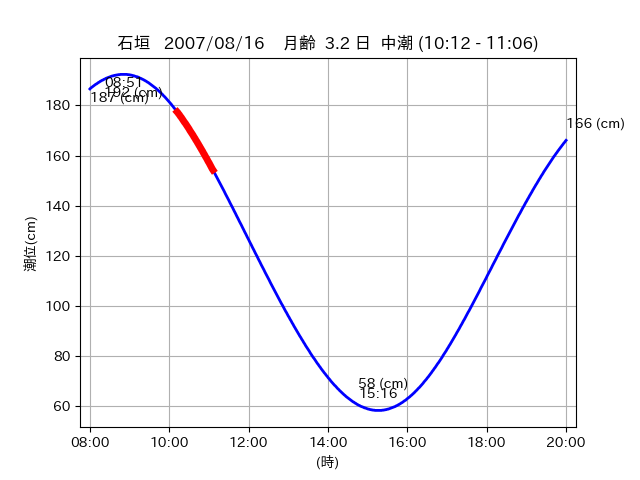

<!DOCTYPE html>
<html>
<head>
    
    <meta http-equiv="content-type" content="text/html; charset=UTF-8" />
    
        <script>
            L_NO_TOUCH = false;
            L_DISABLE_3D = false;
        </script>
    
    <style>html, body {width: 100%;height: 100%;margin: 0;padding: 0;}</style>
    <style>#map {position:absolute;top:0;bottom:0;right:0;left:0;}</style>
    <script src="https://cdn.jsdelivr.net/npm/leaflet@1.9.3/dist/leaflet.js"></script>
    <script src="https://code.jquery.com/jquery-3.7.1.min.js"></script>
    <script src="https://cdn.jsdelivr.net/npm/bootstrap@5.2.2/dist/js/bootstrap.bundle.min.js"></script>
    <script src="https://cdnjs.cloudflare.com/ajax/libs/Leaflet.awesome-markers/2.0.2/leaflet.awesome-markers.js"></script>
    <link rel="stylesheet" href="https://cdn.jsdelivr.net/npm/leaflet@1.9.3/dist/leaflet.css"/>
    <link rel="stylesheet" href="https://cdn.jsdelivr.net/npm/bootstrap@5.2.2/dist/css/bootstrap.min.css"/>
    <link rel="stylesheet" href="https://netdna.bootstrapcdn.com/bootstrap/3.0.0/css/bootstrap-glyphicons.css"/>
    <link rel="stylesheet" href="https://cdn.jsdelivr.net/npm/@fortawesome/fontawesome-free@6.2.0/css/all.min.css"/>
    <link rel="stylesheet" href="https://cdnjs.cloudflare.com/ajax/libs/Leaflet.awesome-markers/2.0.2/leaflet.awesome-markers.css"/>
    <link rel="stylesheet" href="https://cdn.jsdelivr.net/gh/python-visualization/folium/folium/templates/leaflet.awesome.rotate.min.css"/>
    
            <meta name="viewport" content="width=device-width,
                initial-scale=1.0, maximum-scale=1.0, user-scalable=no" />
            <style>
                #map_5e2314a1d55c9f6cbbfe78026173793b {
                    position: relative;
                    width: 2048.0px;
                    height: 1600.0px;
                    left: 0.0%;
                    top: 0.0%;
                }
                .leaflet-container { font-size: 1rem; }
            </style>
        
</head>
<body>
    
    
            <div class="folium-map" id="map_5e2314a1d55c9f6cbbfe78026173793b" ></div>
        
</body>
<script>
    
    
            var map_5e2314a1d55c9f6cbbfe78026173793b = L.map(
                "map_5e2314a1d55c9f6cbbfe78026173793b",
                {
                    center: [24.218, 123.999],
                    crs: L.CRS.EPSG3857,
                    ...{
  "zoom": 12,
  "zoomControl": true,
  "preferCanvas": false,
}

                }
            );

            

        
    
            var tile_layer_fa888d76b94b8f7545270c14f3ebcbdc = L.tileLayer(
                "https://cyberjapandata.gsi.go.jp/xyz/seamlessphoto/{z}/{x}/{y}.jpg",
                {
  "minZoom": 0,
  "maxZoom": 18,
  "maxNativeZoom": 18,
  "noWrap": false,
  "attribution": "\u5730\u7406\u9662\u5730\u56f3",
  "subdomains": "abc",
  "detectRetina": false,
  "tms": false,
  "opacity": 1,
}

            );
        
    
            tile_layer_fa888d76b94b8f7545270c14f3ebcbdc.addTo(map_5e2314a1d55c9f6cbbfe78026173793b);
        
    
            var marker_de3cedbb2a7ff7a485d656ecf6d8eba7 = L.marker(
                [24.288, 124.0186],
                {
}
            ).addTo(map_5e2314a1d55c9f6cbbfe78026173793b);
        
    
            var icon_25d28bf16557855d852dc2be727749b6 = L.AwesomeMarkers.icon(
                {
  "markerColor": "orange",
  "iconColor": "white",
  "icon": "info-sign",
  "prefix": "glyphicon",
  "extraClasses": "fa-rotate-0",
}
            );
        
    
        var popup_163e63a3bf36b1ba2beff8a2bc35ba3f = L.popup({
  "maxWidth": "100%",
});

        
            
                var html_379f1c48707623ba307f0126dd39c386 = $(`<div id="html_379f1c48707623ba307f0126dd39c386" style="width: 100.0%; height: 100.0%;"><table><tr><td></td></tr><tr><td><center>20070816 No.1 </center></table></td></tr></table</div>`)[0];
                popup_163e63a3bf36b1ba2beff8a2bc35ba3f.setContent(html_379f1c48707623ba307f0126dd39c386);
            
        

        marker_de3cedbb2a7ff7a485d656ecf6d8eba7.bindPopup(popup_163e63a3bf36b1ba2beff8a2bc35ba3f)
        ;

        
    
    
                marker_de3cedbb2a7ff7a485d656ecf6d8eba7.setIcon(icon_25d28bf16557855d852dc2be727749b6);
            
    
            var poly_line_9300d380df62be9ccc2cc7f5fc768fe0 = L.polyline(
                [[24.288, 124.0186], [24.2924, 124.0108]],
                {"bubblingMouseEvents": true, "color": "#FF00FF", "dashArray": null, "dashOffset": null, "fill": false, "fillColor": "#FF00FF", "fillOpacity": 0.2, "fillRule": "evenodd", "lineCap": "round", "lineJoin": "round", "noClip": false, "opacity": 1.0, "smoothFactor": 1.0, "stroke": true, "weight": 3}
            ).addTo(map_5e2314a1d55c9f6cbbfe78026173793b);
        
    
            var marker_0d870f5f285cda4589d39b1fe833c523 = L.marker(
                [24.2888, 124.0237],
                {
}
            ).addTo(map_5e2314a1d55c9f6cbbfe78026173793b);
        
    
            var icon_be314b8b09a1246c5a1410682cd6b195 = L.AwesomeMarkers.icon(
                {
  "markerColor": "orange",
  "iconColor": "white",
  "icon": "info-sign",
  "prefix": "glyphicon",
  "extraClasses": "fa-rotate-0",
}
            );
        
    
        var popup_fb8c90c4920e37f4b4a2ae44f30e61fd = L.popup({
  "maxWidth": "100%",
});

        
            
                var html_a70d7593eb428454b2fef70c2f2a4cc7 = $(`<div id="html_a70d7593eb428454b2fef70c2f2a4cc7" style="width: 100.0%; height: 100.0%;"><table><tr><td></td></tr><tr><td><center>20070816 No.2 </center></table></td></tr></table</div>`)[0];
                popup_fb8c90c4920e37f4b4a2ae44f30e61fd.setContent(html_a70d7593eb428454b2fef70c2f2a4cc7);
            
        

        marker_0d870f5f285cda4589d39b1fe833c523.bindPopup(popup_fb8c90c4920e37f4b4a2ae44f30e61fd)
        ;

        
    
    
                marker_0d870f5f285cda4589d39b1fe833c523.setIcon(icon_be314b8b09a1246c5a1410682cd6b195);
            
    
            var poly_line_3d460c7c4616543b7ca3782433fcf9e5 = L.polyline(
                [[24.2888, 124.0237], [24.2863, 124.0275]],
                {"bubblingMouseEvents": true, "color": "#00FFFF", "dashArray": null, "dashOffset": null, "fill": false, "fillColor": "#00FFFF", "fillOpacity": 0.2, "fillRule": "evenodd", "lineCap": "round", "lineJoin": "round", "noClip": false, "opacity": 1.0, "smoothFactor": 1.0, "stroke": true, "weight": 3}
            ).addTo(map_5e2314a1d55c9f6cbbfe78026173793b);
        
    
            var marker_da8aef7d42c1ebb4181cafc337987436 = L.marker(
                [24.2212, 123.9969],
                {
}
            ).addTo(map_5e2314a1d55c9f6cbbfe78026173793b);
        
    
            var icon_b6a27a6643e53bde7f7af82a705e3aee = L.AwesomeMarkers.icon(
                {
  "markerColor": "orange",
  "iconColor": "white",
  "icon": "info-sign",
  "prefix": "glyphicon",
  "extraClasses": "fa-rotate-0",
}
            );
        
    
        var popup_4e12a9fcf46a0550c9066a8ed4241bfc = L.popup({
  "maxWidth": "100%",
});

        
            
                var html_2d9975dd88264a6006a6cb68bae6f32e = $(`<div id="html_2d9975dd88264a6006a6cb68bae6f32e" style="width: 100.0%; height: 100.0%;"><table><tr><td></td></tr><tr><td><center>20070816 No.3 </center></table></td></tr></table</div>`)[0];
                popup_4e12a9fcf46a0550c9066a8ed4241bfc.setContent(html_2d9975dd88264a6006a6cb68bae6f32e);
            
        

        marker_da8aef7d42c1ebb4181cafc337987436.bindPopup(popup_4e12a9fcf46a0550c9066a8ed4241bfc)
        ;

        
    
    
                marker_da8aef7d42c1ebb4181cafc337987436.setIcon(icon_b6a27a6643e53bde7f7af82a705e3aee);
            
    
            var poly_line_b28f793766b3e3c65466d7d206330f39 = L.polyline(
                [[24.2212, 123.9969], [24.2141, 124.0005]],
                {"bubblingMouseEvents": true, "color": "#00FFFF", "dashArray": null, "dashOffset": null, "fill": false, "fillColor": "#00FFFF", "fillOpacity": 0.2, "fillRule": "evenodd", "lineCap": "round", "lineJoin": "round", "noClip": false, "opacity": 1.0, "smoothFactor": 1.0, "stroke": true, "weight": 3}
            ).addTo(map_5e2314a1d55c9f6cbbfe78026173793b);
        
</script>
</html>